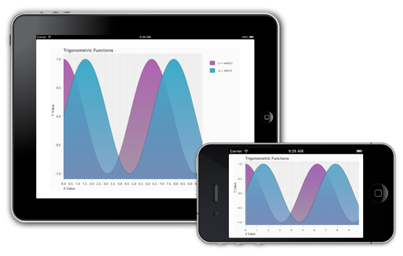
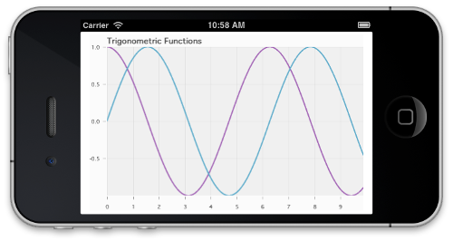

quickstart-Xamarin.iOS Document
quickstart Xamarin.iOS
Introduction
This is a brief introduction to using the ShinobiCharts component with the Xamarin.iOS bindings. This quick start guide will walk you through a series of simple steps introducing the key features of the charting library which includes supplying data to the chart via the datasource, simple styling and configuration of the labels, title and axes.
At the end of this guide you will have created the following chart:

If you have any trouble following the guide, the final project is provided with your download of ShinobiCharts in the Xamarin.iOS samples folder under the name GettingStarted.sln.
Getting Set Up
Start-up Xamarin Studio and create a new project via File / New / Solution, then select C# / iOS / Universal / Single View Application as your solution type. Name your solution ChartsGettingStarted.
Within your newly created project, add a reference to the ShinobiCharts.dll. To do this, right click the References folder under your newly create project and choose Edit References…, then select .Net Assembly and browse to where you saved the ShinobiCharts.dll. Be sure to click Add after selecting the dll to add it to your project, and close the window.
To check you have done all of this correctly, expand the References folder in the Solution Pad and you should see the ShinobiCharts.dll listed as a reference.
If you are running the iOS6 simulator in Xamarin Studio, you will also need to modify your project’s iOS build options to address a known issue with the iOS6 simulator and the current version of ShinobiCharts. Right click on your project, and choose Options from the dropdown menu. Select Build / iOS Build and change the SDK version to 6.1 rather than Default. Finally, click OK to save the project options.
Draw a Simple Chart
The first step is to create an instance of the chart and add it to the view. Open up the GettingStartedViewController.cs file and add the following using statement:
using ShinobiCharts;
Further down the same file add a member variable for the chart:
public partial class ChartsGettingStartedViewController : UIViewController
{
...
ShinobiChart chart;
Within the same file add the following to the ViewDidLoad method:
View.BackgroundColor = UIColor.White;
// Create the chart
float margin = UserInterfaceIdiomIsPhone ? 10 : 50;
chart = new ShinobiChart (new RectangleF (margin, margin, View.Bounds.Width - 2 * margin, View.Bounds.Height - 2 * margin)) {
Title = "Trigonometric Functions",
LicenseKey = "" // TODO: Add your trail licence key here!
};
This instantiates the chart object, and sets its title. Note that the margin around that chart depends on the device form factor. For the iPad a larger margin is used.
If you have downloaded a trial version of the ShinobiCharts you will have been issued with a trial license key. Add the key that you were supplied with at the location indicated above.
The ShinobiChart object is a UIView subclass, so honors resizing masks and auto-layout. Further down the same method add the following:
chart.AutoresizingMask = ~UIViewAutoresizing.None;
This ensures that the chart frame is adjusted when the device orientation changes.
The next step is to add the axes to the chart. In this example both the X and Y axes are linear, although the chart also supports date-time and category axes. Further down the same method add the following:
// Add a pair of axes
SChartNumberAxis xAxis = new SChartNumberAxis ();
chart.XAxis = xAxis;
SChartNumberAxis yAxis = new SChartNumberAxis ();
chart.YAxis = yAxis;
Now that the chart is configured, the final step is to add it to the view. Add the following to the end of the method:
// Add to the view
View.AddSubview (chart);
Before you can see the chart in action, you need to supply some data, which brings us onto the next step …
Adding a Datasource
In order to render your data within the chart you need to supply a ‘datasource’, this is a class that inherits from SChartDataSource.
If you have worked with
UITableViewthe idea of a datasource should be familiar to you. The shinobichart shares the same concepts both of a datasource, for supplying data, and a delegate, for reacting to user interactions.
Create a new class for your datasource by selecting File / New / File… and the choosing Empty Class as the type of file to create. Call this new class GettingStartedDataSource.cs, and then open it up and add the SChartDataSource as the superclass:
public class GettingStartedDataSource : SChartDataSource
{
}
The SChartDatasource protocol has four required methods. We’ll take a look at each of them in turn.
The first method GetNumberOfSeries (ShinobiChart) is used to inform the chart how many series you wish to render. Add the following implementation, with a hard-coded value of two:
public override int GetNumberOfSeries (ShinobiChart chart)
{
return 2;
}
The next method, GetSeries (ShinobiChart, int) is used to supply each series to the chart. The series objects describe the visual appearance of each series, but not their actual data values. Add the following to the data source in order to return two different line series:
public override SChartSeries GetSeries (ShinobiChart chart, int dataSeriesIndex)
{
SChartLineSeries series = new SChartLineSeries ();
// The first series is a cosine curve, the second is a sine curve
series.Title = dataSeriesIndex == 0 ? "y = cos(x)" : "y = sin(x)";
return series;
}
The next method, GetNumberOfDataPoints (ShinobiChart, int), is used to specify the number of data points within a specific series. Add the following implementation below:
public override int GetNumberOfDataPoints (ShinobiChart chart, int dataSeriesIndex)
{
return 100;
}
In this example, both series have 100 points, but they don’t have to have the same number of data points.
The last method required by the protocol is GetDataPoint (ShinobiChart, int, int), which the chart uses to request the value of each individual datapoint for each series. The returned datapoint must inherit from SChartData, which specifies XValue and YValue properties. The charting framework supplies a concrete implementation of this protocol, SChartDataPoint, however, you have the option of inheriting from this abstract base class with your own data-objects in order to avoid the need to maintain two copies of your data.
Add the following implementation:
public override SChartData GetDataPoint (ShinobiChart chart, int dataIndex, int dataSeriesIndex)
{
SChartDataPoint datapoint = new SChartDataPoint ();
// both functions share the same x-values
double xValue = dataIndex / 10.0;
datapoint.XValue = new NSNumber(xValue);
// compute the y-value for each series
datapoint.YValue = new NSNumber(dataSeriesIndex == 0 ? Math.Cos(xValue) : Math.Sin(xValue));
return datapoint;
}
Now that the datasource is implemented, you can go back to GettingStartedViewController.cs add the following to ViewDidLoad:
chart.DataSource = new GettingStartedDataSource();
At this point if you build and run, you should see a couple of series:

With the current implementation each individual datapoint is requested via the datasource. If you have a lot of data, and it is already present in memory, you can optionally make use of the GetDataPoints (ShinobiChart, int) method. Your implementation of this method should return all the points for a given series, and this method will be used instead of GetDataPoint (ShinobiChart, int, int).
Adding Labels and Basic Styling
The chart in its current state is a little plain! This section will build on the simple chart that you have created and add a bit more style.
Firstly, the axes could do with having some labels. Also, the Y axis could do with a bit of padding around the top and bottom values to make it easier to see the top and bottom of the curves.
Open up GettingStartedViewController.cs and edit the axis creation code as follows:
// Add a pair of axes
SChartNumberAxis xAxis = new SChartNumberAxis () {
Title = "X Value"
};
chart.XAxis = xAxis;
SChartNumberAxis yAxis = new SChartNumberAxis () {
Title = "Y Value",
RangePaddingLow = new NSNumber(0.1),
RangePaddingHigh = new NSNumber(0.1)
};
chart.YAxis = yAxis;
It would be nice to see the legend on the iPad, where there is much more screen space to play with. Add the following to the ViewDidLoad method:
chart.Legend.Hidden = UIDevice.CurrentDevice.UserInterfaceIdiom == UIUserInterfaceIdiom.Phone;
One of the most powerful features of the Shinobi charts is their gesture-based interactions. Enable pan and zoom on each axis by adding the following code:
// Enable gestures
xAxis.EnableGesturePanning = true;
xAxis.EnableGestureZooming = true;
yAxis.EnableGesturePanning = true;
yAxis.EnableGestureZooming = true;
These properties allow the user to pan the chart with a single-finger pan gesture, and zoom using two-finger pinch.
Finally, enable area fill by adding the following to GettingStartedDataSource.cs just after each series is created within GetSeries (ShinobiChart, int) …
series.Style.ShowFill = true;
Each series has a style object associated with it, where the style type depends on the series type. A line series has a style object of type SChartLineSeriesStyle. These objects have a a number of properties which you can adjust including line color, thickness and the colors used for gradient fill.
To see the effect of the few simple changes you have just made, build and run:
Now that you have created a simple chart, why not have a go at creating a column, or pie chart?